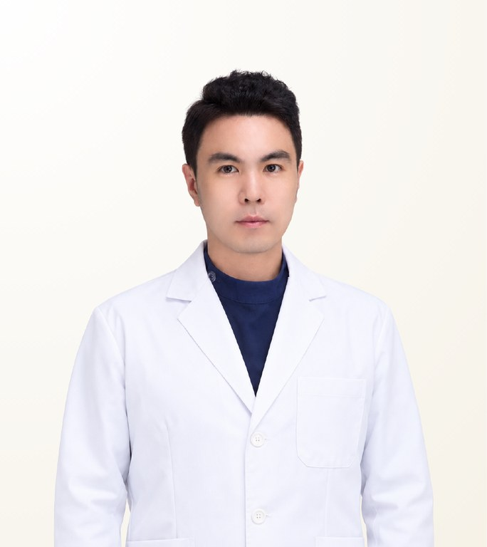

Reviewed by STMSTYLE
Lee Kangwoo
ลี คังอู · 이강우
TOP Plastic Surgery · Board-certified Plastic Surgeon
- Premium Stem-cell Facial Fat Grafting
- Facial Liposuction
- Stem-cell Treatment
- Experience
- 14 years of experience (board-certified since 2012)
- Clinical experience
- 20,000+ fat contouring cases
- Recommended Stay
- 7 days
About the Doctor
Dr. Lee Kangwoo is a board-certified plastic surgeon at TOP Plastic Surgery in Seoul, known for premium stem-cell facial fat grafting, facial liposuction and stem-cell treatment. Board-certified since 2012, he has 14 years of experience and more than 20,000 fat contouring cases. He reduces fat where it is unnecessary and adds it where volume is lacking, aiming for natural filling and a harmonious facial line rather than an operated look.
Case Expertise
Premium Stem-cell Facial Fat Grafting
The patient's own fat is harvested, processed with a stem-cell kit and grafted into hollow areas of the face. The volume and line of the whole face are assessed first to decide where and how much is needed, aiming for what will settle naturally rather than filling as much as possible at once.
Facial Liposuction
Excess fat in the cheeks or along the jawline is reduced to refine the facial line, with fat grafting into hollow areas planned alongside to keep the balance.
Stem-cell Treatment
Treatment using stem cells obtained from fat, carried out together with facial fat grafting or on its own, with the method decided by the purpose and area of treatment.
Other treatments available
Materials & Equipment
Video
Q&A video with the doctorAsk our team on WhatsApp or LINE for more informationPhilosophy of Care
He values natural filling suited to the shape of the face and harmony of the facial line. Rather than simply adding or removing a large amount of fat, he looks at the volume and line of the whole face, filling where needed and reducing fat where it is not, and pursues a natural, refined change through fat contouring combined with stem cells. Premium stem-cell facial fat grafting is his signature procedure, and he considers a calm, considerate manner toward patients important.
— Lee Kangwoo
STMSTYLE Assessment
Based on long-term collaboration, STMSTYLE sees Dr. Lee Kangwoo's calm, warm and considerate manner toward patients as a key strength. STMSTYLE rates highly his approach of stem-cell fat grafting for the breast and, for the face, reducing unnecessary fat while repositioning it where needed to create a natural, refined line. The clinic also invests actively in stem-cell and skin equipment. STMSTYLE recommends him for patients who want natural volume and an improved facial line rather than an operated look.
STMSTYLECareer & Training
View full background
Licences & certification
- Board-certified Plastic Surgeon 2012
Career
- Plastic Surgeon, TOP Plastic Surgery
Professional memberships
- Life member, Korean Society of Plastic and Reconstructive Surgeons
- Member, Korean Society for Aesthetic Plastic Surgery
- Member, Korean Cleft Palate-Craniofacial Association
- Member, Korean Society for Microsurgery
- Member, Korean Society for Surgery of the Hand
- Member, Korean Wound Management Society
- Member, Korean Association of Clinic-based Plastic Surgeons
- Member, International Confederation for Plastic, Reconstructive and Aesthetic Surgery (IPRAS)
Frequently Asked Questions
Is Dr. Lee Kangwoo good at facial fat grafting?
Yes. Premium stem-cell facial fat grafting is Dr. Lee Kangwoo's signature procedure, backed by more than 20,000 fat contouring cases. He assesses the volume and line of the whole face before deciding where and how much fat to add.
How does Dr. Lee Kangwoo perform stem-cell fat grafting?
Dr. Lee Kangwoo harvests the patient's own fat, processes it with a stem-cell kit and grafts it into hollow areas of the face. The amount is set by what will settle naturally, rather than by filling as much as possible in one session.
What kind of patients is Dr. Lee Kangwoo best suited for?
Dr. Lee Kangwoo suits patients who want natural volume and a better facial line without an operated look, such as those with hollow areas in some parts of the face and excess fat in others. He plans liposuction and fat grafting together for balance, and also performs stem-cell breast fat grafting.
How long should I stay in Korea for treatment with Dr. Lee Kangwoo?
The recommended stay for treatment with Dr. Lee Kangwoo is 7 days. The actual length depends on the scope and number of procedures and is advised individually after consultation.
Does Dr. Lee Kangwoo perform the treatment personally, and how can I consult through STMSTYLE?
Treatment is performed by Dr. Lee Kangwoo himself, and repeat treatment is available where needed. STMSTYLE has worked directly with him over the long term and coordinates from the first consultation in Bangkok or via WhatsApp through to scheduling at the clinic. The final plan and cost are confirmed after an in-person consultation.
Sources
View sources and review record
| Item | Source | Checked |
|---|---|---|
| Plastic surgery board certification (2012) and society memberships | TOP Plastic Surgery official doctor profile and academic society records | 2026-08-20 |
| Fat grafting and stem-cell procedure information | TOP Plastic Surgery official blog | 2026-08-20 |
| Profile photo and introduction video | Materials supplied by TOP Plastic Surgery | 2026-08-20 |
| Main procedures, philosophy of care and patient approach | STMSTYLE direct review through in-person meetings, consultations and long-term patient coordination | 2026-08-20 |
Review record · 2026-08-20
STMSTYLE reviewed Dr. Lee Kangwoo's profile through long-term collaboration, in-person meetings, on-site visits and actual patient coordination, cross-checked against the clinic's official profile, official blog and supplied materials.